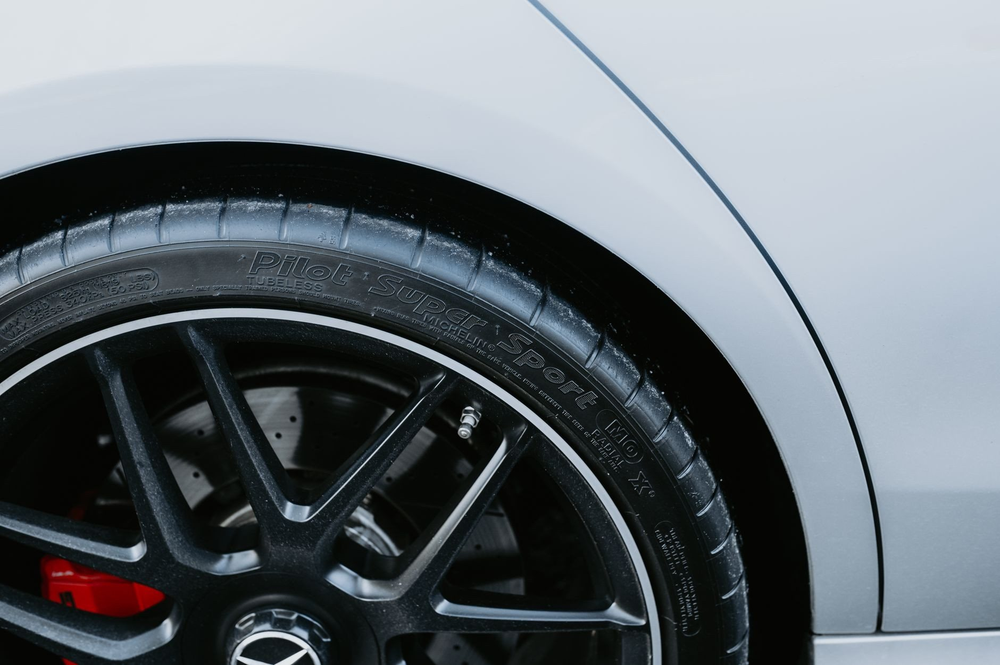
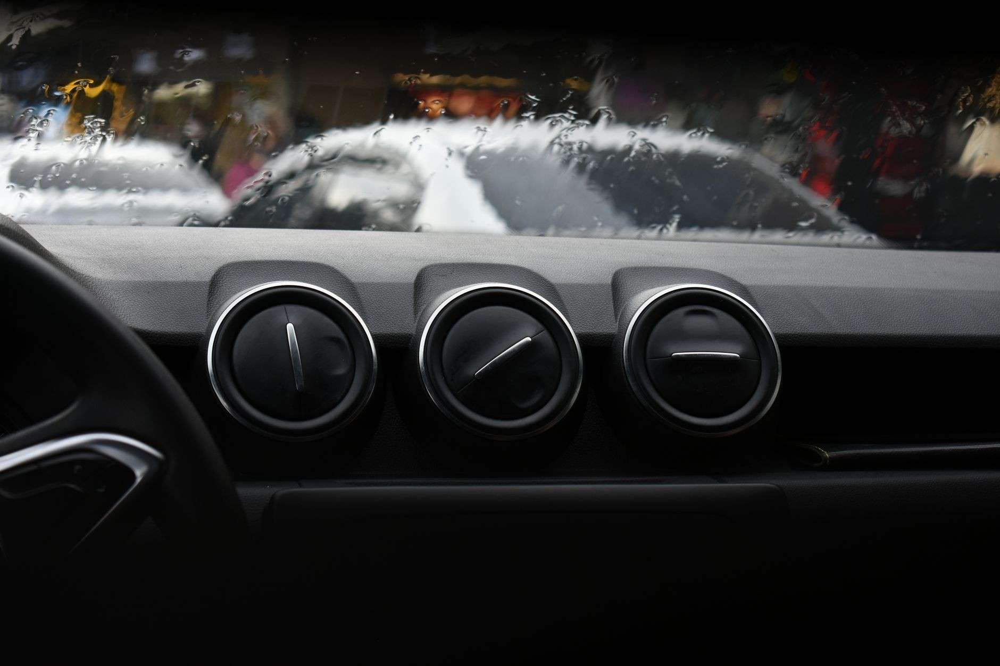

- Prostowanie felg
- Klimatyzacja samochodowa
- Wulkanizacja
- Mechanika
„Bardzo miła i fachowa obsługa.”Dariusz Dziubek
„Polecam warsztat samochodowy Marcina i Piotra, którzy bezproblemowo i fachowo zajmują się mechaniką i klima…”Grzegorz Bystrzak

Kiedy przyjechać
Po czym poznać, że czas na wizytę
Kilka objawów, z którymi kierowcy dzwonią do nas najczęściej.
Prostowanie felg
- Kierownica drży przy 80-120 km/h, choć koła były wyważane
- Opona co kilka dni traci powietrze, a nie ma w niej gwoździa
- Na rancie felgi widać wgniecenie albo spłaszczenie
- Po uderzeniu w dziurę auto zaczęło buczeć albo wibrować
Serwis klimatyzacji
- Z nawiewów leci letnie albo ciepłe powietrze
- Po włączeniu nawiewu w kabinie czuć stęchliznę
- Szyby długo parują w deszczowe dni
- Spod maski słychać syczenie albo głośną pracę sprężarki
Jak pracujemy
Twoje auto w dobrych rękach
Od przyjęcia auta do odbioru wiesz, na jakim etapie jest naprawa.
- 01
Dzwonisz
Opisz, co się dzieje: drży kierownica, klimatyzacja nie chłodzi, opona traci powietrze. Umówimy termin.
- 02
Sprawdzamy
Oglądamy felgę albo układ klimatyzacji i mówimy, co jest do zrobienia, ile to kosztuje i ile potrwa.
- 03
Robimy
Prostujemy, serwisujemy albo naprawiamy, dopiero gdy potwierdzisz zakres.
- 04
Odbierasz
Koło sprawdzone na wyważarce, klimatyzacja sprawdzona na nawiewach. Auto gotowe do drogi.
Galeria
Felgi, klimatyzacja, opony
Zdjęcia poglądowe: tak wyglądają rzeczy, którymi zajmujemy się na co dzień.



Opinie
Co mówią klienci
Bardzo miła i fachowa obsługa. Mechanicy którzy są jednocześnie właścicielami zakładu mechanicznego i wulkanizacji mają dodatkową zaletę: ogromną wiedzę odnośnie napraw samochodowych. Nigdy się na nich nie zawiodłemDariusz Dziubek
Polecam warsztat samochodowy Marcina i Piotra, którzy bezproblemowo i fachowo zajmują się mechaniką i klimatyzacją mojego szerszenia renault Megane IIIGrzegorz Bystrzak
Umów się
Felga drży albo klima nie chłodzi?
Zadzwoń: +48 504 707 222. Powiemy, kiedy możemy przyjąć auto.